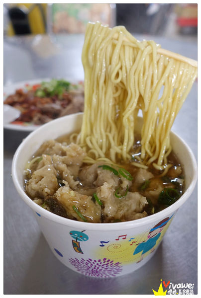

「原榮小吃店」店家資訊
地址：苗栗縣後龍鎮中龍里東門街124號
電話：037-723051
營業時間：平日9:00-17:00或18:00、假日09:00-15:00或16:00（賣完為止、每周二公休）
▲這間「原榮小吃店」是我媽特別說要帶我來品嘗的小吃店，當地人似乎都叫他「阿全肉羹」，
原因是「阿全」是上一代老闆的稱呼，現在則是由老闆的大兒子接手！
▲因為平時不會特別到後龍來，都沒發現在後龍這邊有這麼多小吃攤，到了用餐時間附近都是滿滿的人！
這間「原榮小吃店」無論是內用或外帶的人都非常多，外帶的人建議先打電話預約！
▲這是店內的價目表，他們的餐點分量算多，整體價格算是蠻合理的。
▲桌上擺放著餐具，店內的桌上和地上整潔都維持的很不錯！
▲這是我和媽媽兩個人的午餐，因為都沒有太餓，所以就點了一份肉羹麵、小菜、水晶餃一同品嘗。
＃滷大腸和嘴邊肉：每份50元，此份共100元。

▲小菜的部份就是看店家當下還有剩下什麼，印象中她們的小菜都是從冰箱拿出來的，新鮮度很夠！
加上了油膏和蔥花，簡單的調味就很好吃，如果有在吃辣的人可以自己加入桌上放的辣椒醬。
▲滷大腸和嘴邊肉的份量很足夠！滷大腸十分入味！嘴邊肉吃起來很脆口！個人覺得很好吃～
＃肉羹麵：50元。
▲媽媽特別跟我推薦他們的肉羹麵，當天打卡到粉絲團上才發現有很多人都知道這間店，
也都會特別推薦肉羹麵！
還有些人表示這比宜蘭有名的肉羹還要好吃很多！
個人是覺得還不錯吃，但還沒有成為我心中的第一名肉羹麵阿～
▲裡面的肉羹份量很多，而且吃起來口感很扎實，真的用肉做成的肉羹，而非用魚漿做成的肉羹。

▲麵量非常多，平常只要點這樣一份肉羹麵肯定就能飽餐一頓。
＃乾水晶餃：35元。
▲水晶餃一份有六個，份量很多，而且每一個都很大顆，用料很實在！裡頭加入蔥花和油膏～
▲內餡是扎實的肉塊，外皮很彈牙，吃起來很有飽足感！我個人也是水晶餃控的說～
平時在台北根本都吃不到這樣的水晶餃阿～似乎要在客家地區才能品嘗到這樣的水晶餃！
引用文章:瑋瑋＊美食萬歲